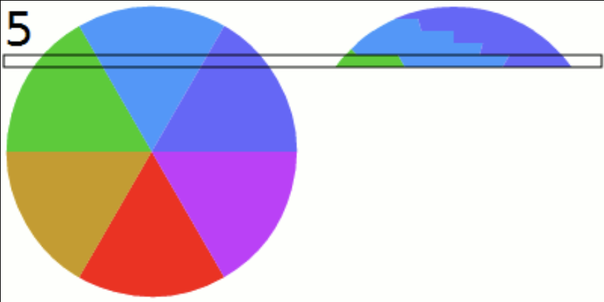
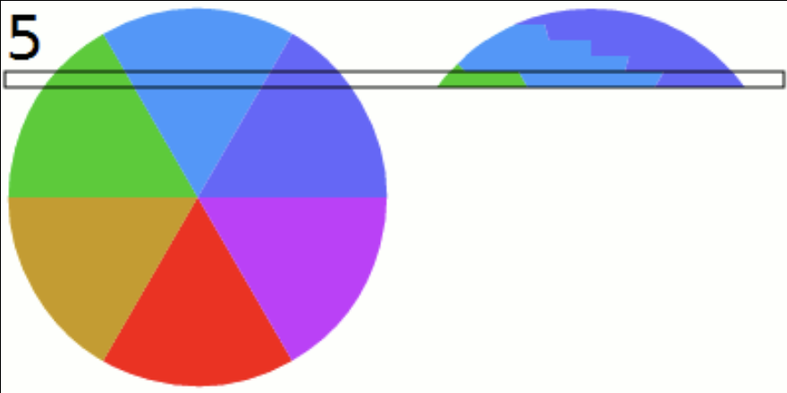
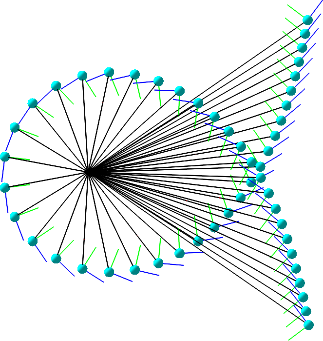
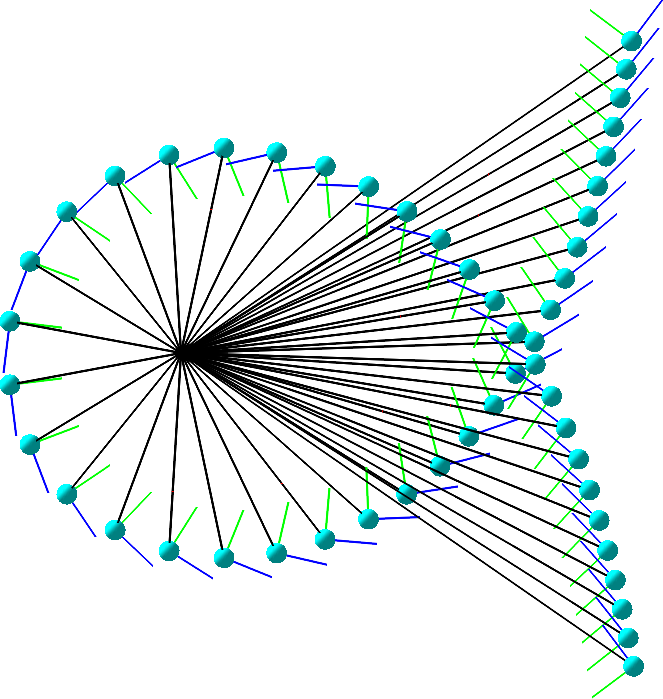

PhD position in Mathematics, specialization in Algebraic Geometry & Neural Network Theory
KTH Royal Institute of Technology, Stockholm
Application deadline • May 12, 2025 11:59 PM CET
How to apply• TBA
Contact • Kathlén Kohn kathlen@kth.se
The successful candidate will pursue a PhD project at the intersection of algebraic geometry and neural network theory under the supervision of Kathlén Kohn. The position is a time-limited, full-time, five year position starting September 2025 or at an agreed upon date. The position is fully funded for four years and will be extended to five years by assigning teaching duties. The student will be enrolled in the Doctoral program in Mathematics. The successful candidate will be part of the vibrant and diverse research groups in algebraic geometry and data science in Stockholm. Students interested in fields related to the following are encouraged to apply: algebra, geometry, machine learning theory, data science.
 


Project proposal: Algebraic Neural Network Theory
We will study neural networks with polynomial (or more generally, piecewise rational) activation functions.
The benefits of this setting are: 1) Such networks can be investigated with algebraic geometry
and 2) they can approximate arbitary networks.
We will be particularly interested in understanding the set of functions parametrized by a fixed network architecture when varying the weights.
This set is a (semi)-algebraic variety in out setting, called neurovariety.
For example, the blue set is the neurovariety of small self-attention mechanisms.
Network training can be interpreted as finding the "closest" point on the neurovariety from the training data (as in the figure with the yellow variety).
We will study the properties of this optimization problem.
For instance, we will investigate the loss landscape via algebraic discriminants (see figure on bottom left)
and the effect of singularities on implicit bias towards subnetworks (see figure on bottom right).
For an introductory reading into this growing area, see our Invitation to Neuralgebraic Geometry.
 
